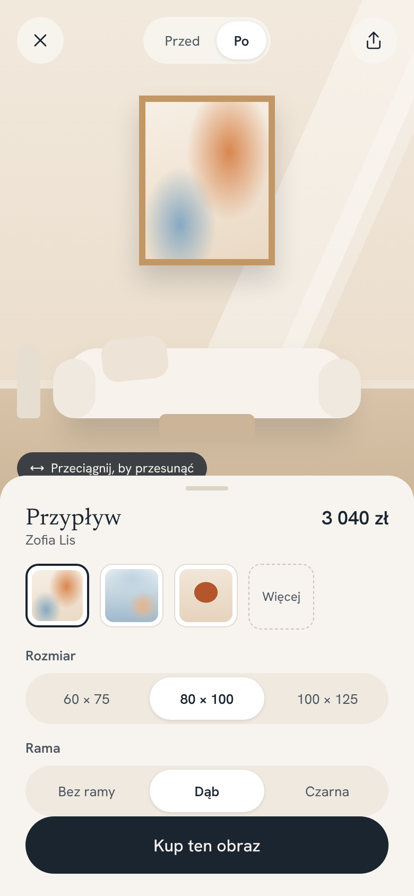
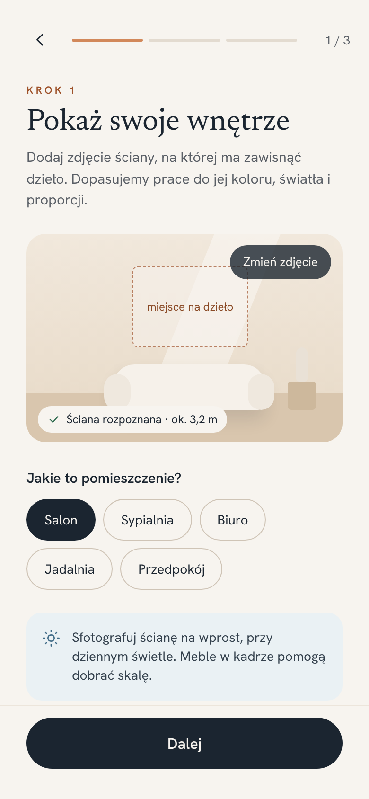
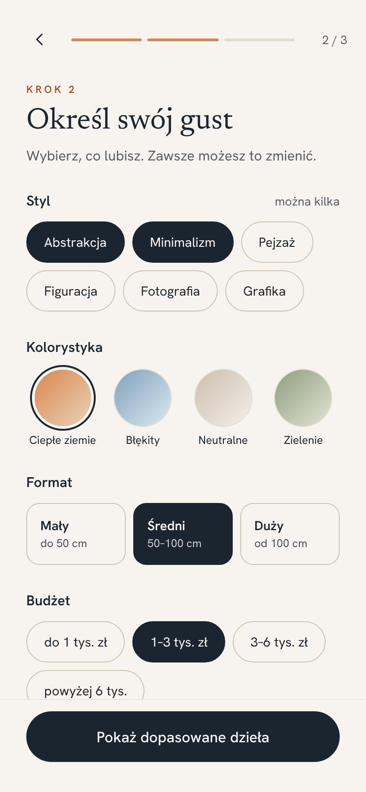
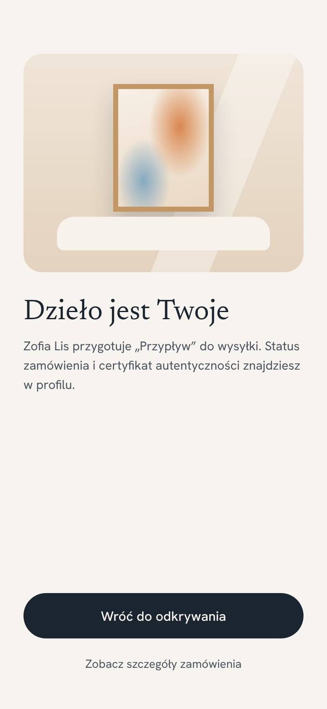
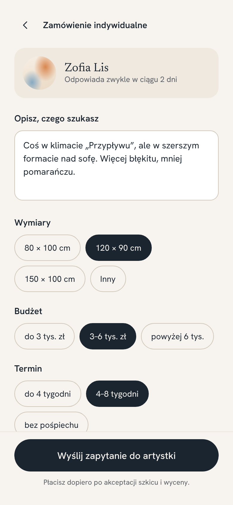
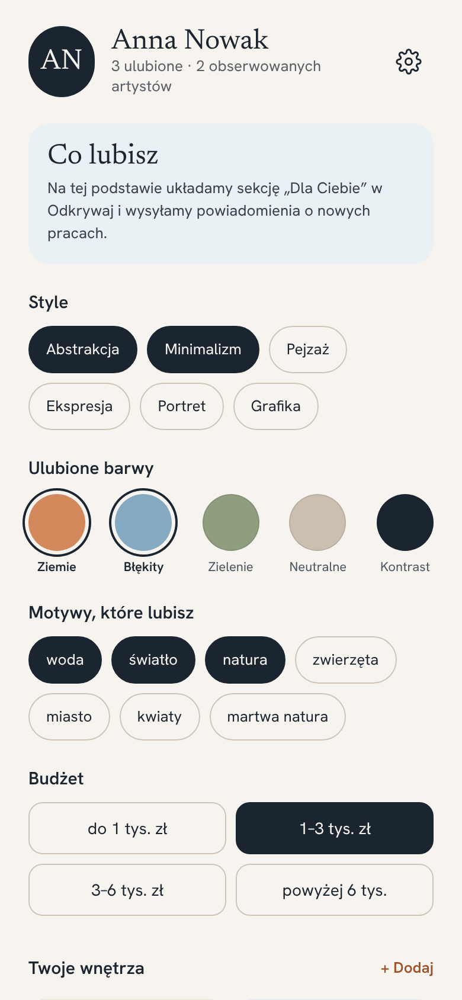
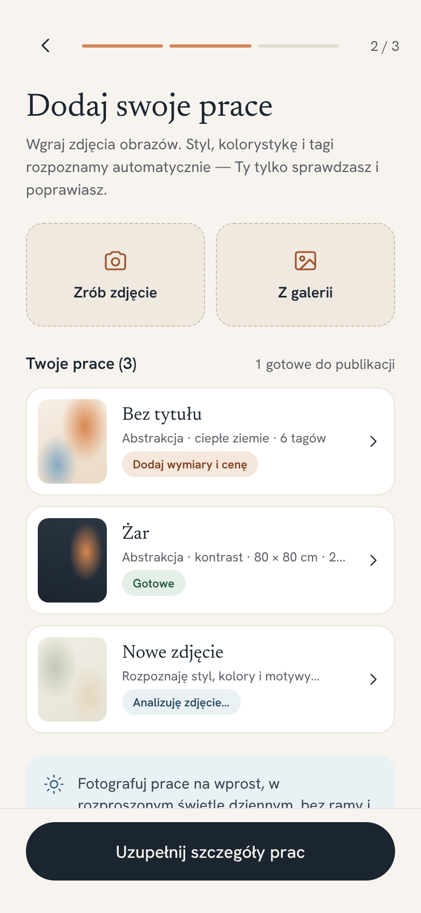
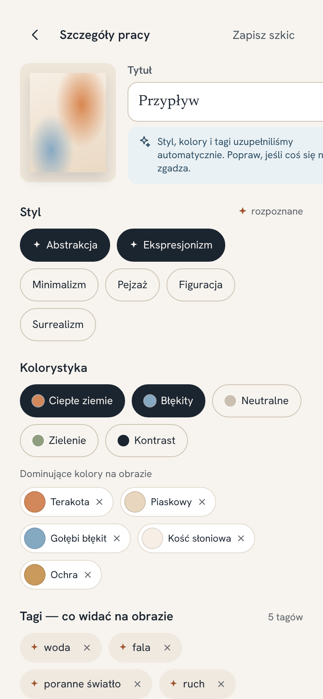
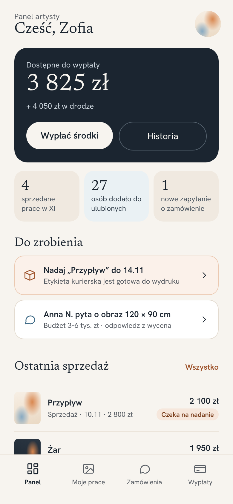
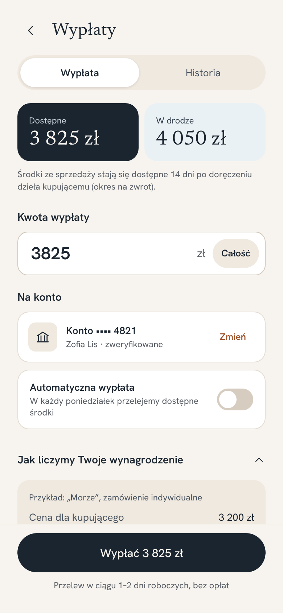

ARTLY zaczyna od Twojej przestrzeni, nie od katalogu. Zrób zdjęcie ściany, powiedz, co lubisz — pokażemy prace niezależnych artystów dopasowane do wnętrza, stylu i budżetu. I zobaczysz je u siebie, zanim kupisz.

Najpierw Twoja przestrzeń, styl i potrzeby — dopiero potem katalog. Dobieramy prace do koloru ściany, światła i proporcji.
Obraz pojawia się na zdjęciu Twojej ściany w realnej skali. Zmieniasz rozmiar i ramę, porównujesz „przed” i „po”.
Kupujesz oryginały bezpośrednio od artystów z Twojego kraju, poznajesz ich historie i możesz zamówić dzieło na wymiar.

Zrób zdjęcie ściany salonu, sypialni lub biura.

Wybierz styl, kolorystykę, format i budżet.
Porównaj dopasowane dzieła na swojej ścianie.

Kup gotową pracę albo zleć realizację artyście.
Ekran Odkrywaj to codzienna dawka sztuki ułożona wokół Twojego gustu i Twojego wnętrza.
Koniec z zastanawianiem się, czy obraz nie będzie za mały. ARTLY rozpoznaje ścianę na zdjęciu i pokazuje dzieło w jego prawdziwej skali.

Nie znalazłeś idealnego? Opisz, czego szukasz, wybierz wymiary, budżet i termin. Artysta dostaje Twój opis razem ze zdjęciem wnętrza.
W profilu ustawiasz ulubione style, barwy i motywy — od jeziora po martwą naturę. Zapisujesz swoje wnętrza i obserwujesz artystów.

Pokazujemy przede wszystkim twórców z kraju, w którym mieszkasz. Krótsza dostawa, prostsze zakupy, a czasem odbiór osobisty w pracowni. Jeśli chcesz, otworzysz ARTLY na całą Europę.
Aplikacja automatycznie mówi w języku Twojego telefonu. Opisy dzieł tłumaczymy, zawsze z dostępem do oryginału artysty.
Pokazujemy Twoje prace osobom, do których wnętrz naprawdę pasują. Ty tworzysz — resztę ułatwiamy.
Dodaj zdjęcie obrazu, a aplikacja sama rozpozna styl, kolorystykę i motywy — Ty tylko sprawdzasz i poprawiasz.
Profil z opowieścią o Tobie i Twojej pracowni. Opisy piszesz sam — możesz poprosić o pomoc w redakcji.
Sprzedawaj gotowe prace i przyjmuj zlecenia na wymiar. Wszystkie zadania widzisz w jednym panelu.
Widzisz, ile zarobiłeś i ile jest w drodze. Wypłacasz środki, kiedy chcesz, albo automatycznie co tydzień.




Nie. Możesz od razu przeglądać dzieła. Zdjęcie ściany sprawia jednak, że rekomendacje są trafniejsze, a wizualizacja pokazuje obraz w prawdziwej skali.
Wysyłasz artyście opis, wymiary, budżet i termin. Artysta odpowiada wyceną i szkicem — płacisz dopiero, gdy je zaakceptujesz.
Od niezależnych artystów, którzy sami dodają swoje prace do ARTLY. Domyślnie pokazujemy twórców z Twojego kraju.
Pobierz aplikację i wybierz „Dołącz do Artly”. Załóż konto, opowiedz swoją historię i dodaj zdjęcia prac — po akceptacji profilu Twoje dzieła zobaczą kupujący.
Artyści znajdują swoich odbiorców. Pobierz aplikację i zobacz, co zawiśnie u Ciebie.